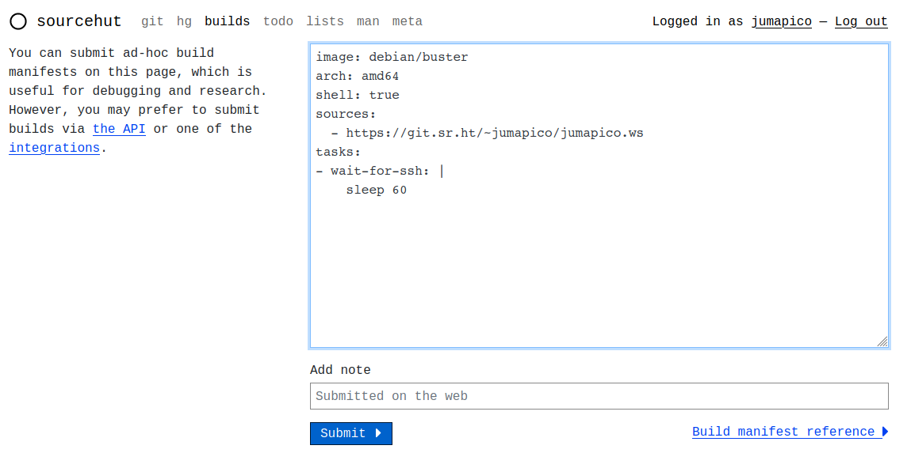
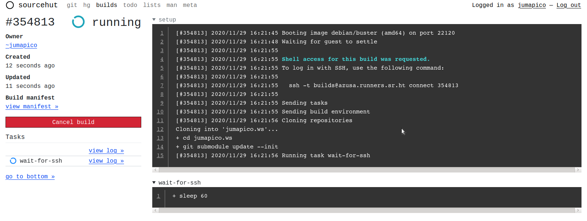

Contexto
En un post anterior comenté que elegí migrar mis repositorios personales a sourcehut. Ya que todavía no tienen un servicio similar al de github pages -donde tengo hosteado este blog a la fecha-, decidí mantener el repositorio jumapico.github.io en github, pero realizando los siguientes cambios:
- El repositorio jumapico.ws que contiene las fuentes del blog fué migrado a sourcehut.
- Se pasó del uso de Travis CI a utilizar el mecanismo brindado por sourcehut: builds.sr.ht
A pesar de la sencillez de la página principal, esta brinda toda la información necesaria:
Welcome to builds.sr.ht! This provides continuous integration services for sourcehut, the hacker's forge. Features of this service include:
Runs fully virtualised builds on various Linux distros and BSDs Run anonymous jobs that aren't tied to a repository Post-build triggers for email, webhooks, etc Powerful API for complex build scenarios
Si se está logueado al servicio se obtiene simplemente un link a la documentación:
Welcome back, jumapico! This is the sourcehut build service. Documentation for its use is available here.
A continuación se describirá cual fué el proceso que utilicé para utilizar builds.sr.ht en reemplazo de Travis CI para la generación del blog.
Explorando builds.sr.ht
Lo primero a tener en cuenta es que builds.sr.ht tiene varias formas de generar trabajos descriptas en la documentación. A nosotros nos interesarán dos:
- La integración con git.sr.ht mediante la existencia de un archivo
.build.ymlen la base del repositorio. - Via web, mediante la url https://builds.sr.ht/submit.
El primer caso será utilizado para generar el sitio y contiene la configuración a la que deseamos llegar.
El segundo caso será utilizado para ir explorando como elegir las opciones
disponibles en el archivo .build.yml descriptas en el
Build manifest reference.
Se comienza eligiendo una de las imágenes disponibles. Ya que personalmente utilizo debian voy a elegir esa distribución. La versión será buster, que al día de hoy es la rama estable, y como architectura amd64 (la única al día de hoy y la que está marcada como estable, pero ya que explicito es mejor que implicito...). De esa forma la elección de la imagen queda como:
image: debian/buster
arch: amd64
Ya que se desean realizar pruebas en la máquina virtual provista por
builds.sr.ht se habilitará el acceso mediante ssh estableciendo la opción
shell a true
shell: true
Como repositorio a clonar dentro de la máquina virtual se elige el del blog utilizando git sobre http:
sources:
- https://git.sr.ht/~jumapico/jumapico.ws
Hay que tener en cuenta que en caso de ser un repositorio privado o utilizar git como transporte se require configurar una clave ssh.
Por último como tarea a realizar utilizaremos simplemente una llamada a
sleep 60, que nos dará un minuto de tiempo luego de comenzada la tarea para
conectarnos por ssh. Si la tarea termina muy rápido (por ejemplo, si imprimimos
un echo) cuando intentemos conectarnos a la máquina virtual esta ya habrá sido
terminada ya que la tarea terminó:
tasks:
- wait-for-ssh: |
sleep 60
El archivo final, build-tests.yml, queda como:
image: debian/buster
arch: amd64
shell: true
sources:
- https://git.sr.ht/~jumapico/jumapico.ws
tasks:
- wait-for-ssh: |
sleep 60
Para generar un trabajo (job) vamos a la url https://builds.sr.ht/submit,
copiamos el manifiesto y presionamos el botón Submit.

Allí somos reenviados a la página correspondiente al trabajo creado, en nuestro caso https://builds.sr.ht/~jumapico/job/354813.

Si prestamos atención, en el paso de setup, aparece el mensaje:
[#354813] 2020/11/29 16:21:55 Shell access for this build was requested.
[#354813] 2020/11/29 16:21:55 To log in with SSH, use the following command:
[#354813] 2020/11/29 16:21:55
[#354813] 2020/11/29 16:21:55 ssh -t builds@azusa.runners.sr.ht connect 354813
Generando el archivo .build.yml
Una vez que tenemos el acceso ssh a la máquina virtual nos conectamos a esta:
$ ssh -t builds@azusa.runners.sr.ht connect 354813
Connected to build job #354813 (running): https://builds.sr.ht/~jumapico/job/354813
[#354813] 2020/11/29 16:21:55
[#354813] 2020/11/29 16:21:55 ssh -t builds@azusa.runners.sr.ht connect 354813
[#354813] 2020/11/29 16:21:55
[#354813] 2020/11/29 16:21:55 Sending tasks
[#354813] 2020/11/29 16:21:55 Sending build environment
[#354813] 2020/11/29 16:21:56 Cloning repositories
Cloning into 'jumapico.ws'...
+ cd jumapico.ws
+ git submodule update --init
[#354813] 2020/11/29 16:21:56 Running task wait-for-ssh
[wait-for-ssh] + sleep 60
Your VM will be terminated 4 hours from now, or when you log out.
Linux build 4.19.0-11-amd64 #1 SMP Debian 4.19.146-1 (2020-09-17) x86_64
The programs included with the Debian GNU/Linux system are free software;
the exact distribution terms for each program are described in the
individual files in /usr/share/doc/*/copyright.
Debian GNU/Linux comes with ABSOLUTELY NO WARRANTY, to the extent
permitted by applicable law.
Last login: Sun Nov 29 16:21:57 2020 from 172.17.0.1
$
Por lo que podemos apreciar del mensaje anterior, tenemos cuatro horas máximo para realizar pruebas.
Comenzamos por algunas pruebas básicas:
$ who
build pts/0 Nov 29 16:21 (172.17.0.1)
$ sudo echo Yes!
Yes!
$ ls
jumapico.ws
O sea:
- Somos el usuario
build - Tenemos permiso de
sudo - Nuestro repositorio ya está descargado
A partir de aquí se irán realizando pruebas hasta poder crear el archivo
build.yml que generará el blog.
Este archivo comenzará con la misma imagen y repositorio que el anterior, pero ya que suponemos que será definitivo no estamos interesados en que se tenga acceso de shell:
image: debian/buster
arch: amd64
sources:
- https://git.sr.ht/~jumapico/jumapico.ws
Sobre los comandos que realizará la tarea de generación del blog, si bien estos
se encuentran en el archivo Makefile, basicamente consiste en:
- Instalar el generador del blog: nanoc y sus dependencias.
- Generar el blog.
- Subirlo a github pages.
Para instalar el generador y sus dependencias se utiliza el programa bundle
que según el Makefile se instala utilizando el comando gem. Ejecutandolo en
la máquina virtual:
$ cd jumapico.ws
$ gem install --user-install bundler:2.1.4
-sh: 14: gem: not found
Lo cual es razonable, ya que gem es parte de ruby, el cual no está instalado
por defecto en la VM. Ya que tenemos permisos de sudo, en lugar de crear otro
manifiesto que indique la instalación del paquete ruby lo instalaremos en esta
instancia, teniendo el cuidado de agregarlo en el manifest que estamos creando
en el archivo build.yml.
La versión de ruby en debian buster es la 2.5, por lo que instalamos el paquete utilizando:
$ sudo apt-get install -V ruby2.5
Se instala rápido, sin problemas, y ahora probamos nuevamente de instalar bundler:
$ gem install --user-install bundler:2.1.4
$ gem install --user-install bundler:2.1.4
Fetching: bundler-2.1.4.gem (100%)
WARNING: You don't have /home/build/.gem/ruby/2.5.0/bin in your PATH,
gem executables will not run.
Successfully installed bundler-2.1.4
Parsing documentation for bundler-2.1.4
Installing ri documentation for bundler-2.1.4
Done installing documentation for bundler after 4 seconds
1 gem installed
Instala sin problemas, pero hay que tener en cuenta el mensaje que indica que
se debe agregar al PATH la ruta $HOME/.gem/ruby/2.5.0/bin.
Hacemos esto y continuamos instalando las dependencias agregando la ruta
anterior al PATH:
$ export PATH=$PATH:$HOME/.gem/ruby/2.5.0/bin
$ bundle install --path vendor
Installing commonmarker 0.21.0 with native extensions
Gem::Ext::BuildError: ERROR: Failed to build gem native extension.
current directory: /home/build/jumapico.ws/vendor/ruby/2.5.0/gems/commonmarker-0.21.0/ext/commonmarker
/usr/bin/ruby2.5 -r ./siteconf20201129-685-sw4fux.rb extconf.rb
mkmf.rb can't find header files for ruby at /usr/lib/ruby/include/ruby.h
extconf failed, exit code 1
Gem files will remain installed in /home/build/jumapico.ws/vendor/ruby/2.5.0/gems/commonmarker-0.21.0 for inspection.
Results logged to /home/build/jumapico.ws/vendor/ruby/2.5.0/extensions/x86_64-linux/2.5.0/commonmarker-0.21.0/gem_make.out
An error occurred while installing commonmarker (0.21.0), and Bundler cannot continue.
Make sure that `gem install commonmarker -v '0.21.0' --source 'https://rubygems.org/'` succeeds before bundling.
In Gemfile:
commonmarker
Otro error. Esta vez porque no se encuentra el archivo
/usr/lib/ruby/include/ruby.h necesario para compilar extensiones nativas de
ruby. La solución es fácil: se instala el paquete ruby2.5-dev que como indica
su descripción:
Header files for compiling extension modules for the Ruby 2.5
y se vuelven a instalar las dependencias:
$ sudo apt-get install -Vy ruby2.5-dev
$ bundle install --path vendor
...
Installing nokogiri 1.10.9 with native extensions
Gem::Ext::BuildError: ERROR: Failed to build gem native extension.
current directory: /home/build/jumapico.ws/vendor/ruby/2.5.0/gems/nokogiri-1.10.9/ext/nokogiri
/usr/bin/ruby2.5 -r ./siteconf20201129-811-eydcqn.rb extconf.rb
checking if the C compiler accepts ... yes
Building nokogiri using packaged libraries.
Using mini_portile version 2.4.0
checking for gzdopen() in -lz... no
zlib is missing; necessary for building libxml2
*** extconf.rb failed ***
Could not create Makefile due to some reason, probably lack of necessary
libraries and/or headers. Check the mkmf.log file for more details. You may
need configuration options.
...
Otro error. Esta vez por falta de la librería zlib. Se instalan los archivos
necesarios para el desarrolo mediante el paquete zlib1g-dev y se vuelve a
probar:
$ sudo apt-get install -Vy zlib1g-dev
$ bundle install --path vendor
...
Bundle complete! 10 Gemfile dependencies, 55 gems now installed.
Bundled gems are installed into `./vendor`
y esta vez ya se instalan las dependencias sin problemas.
Escribiendo la informacion anterior como parte del archivo build.yml tenemos:
packages:
- ruby2.5
- ruby2.5-dev # for native extensions
- zlib1g-dev # for nokogiri
y
tasks:
- build: |
export PATH=$PATH:$HOME/.gem/ruby/2.5.0/bin
cd jumapico.ws
bundle install --path vendor
Siguendo en la consola con la generación del sitio:
$ bundle exec nanoc
...
Site compiled in 0.80s.
Resta subir los archivos al repositorio jumapico.github.io.
Manejo de secretos - variables de entorno
El envió del sitio generado a github pages se realiza igual que con Travis CI:
- Se agregan los archivos generados a un repositorio git.
- Se hace un push
forzado(que sobreescribe el contenido del repositorio de remoto) utilizando la url https://${GITHUB_TOKEN}@github.com/jumapico/jumapico.github.io la cual debe utilizar un Personal Access Token de github con permisos para escribir en el repositorio.
Ya que git está instalado en la máquina virtual (es necesario para clonar nuestro repositorio) no es necesario ninguna acción, extra para el primer paso:
$ cd output
$ git init
Initialized empty Git repository in /home/build/jumapico.ws/output/.git/
$ git config user.name "Build SourceHut"
$ git config user.email "build@sr.ht"
$ git add .
$ git commit -m "Deployed '$(cd ..; git rev-parse --short HEAD)' to Github pages"
[master (root-commit) d201e38] Deployed '2d5dc77' to Github pages
204 files changed, 25611 insertions(+)
...
La nueva dificultad que aparece es como disponibilizar la variable de entorno
GITHUB_TOKEN con el token obtenido de github.
Para ello se utilizará la incidencia #221 de builds.sr.ht
que da una pista de como solucionar el problema: se agregan las variables de
entorno en un archivo de secretos y se cargan en el shell. Ya que por defecto
las tareas del shell se ejecutan utilizando -x, debe deshabilitarse
temporalmente la impresión de comandos ejecutados, para que no aparezcan los
secretos en el log cuando son cargados:
set +x
. ~/.buildsecrets
set -x
El archivo ~/.buildsecrets es creado en la web accediendo a la página
builds.sr.ht secret management dashboard y agregando como contenido del archivo
export GITHUB_TOKEN=XXXXX
El tipo de secreto File, la ruta ~/.buildsecrets y modo 600. Al presionar
el botón Add secret se nos muestra el mensaje:
Successfully added secret b714e84b-1f5e-46fd-9aa1-737e0e5fe881.
Y recargando la página vemos todos nuestros secretos:

que ahora puede ser utilizando agregando en el manifiesto:
secrets:
- b714e84b-1f5e-46fd-9aa1-737e0e5fe881
Pasando en limpio
De lo anterior tenemos que el manifiesto escrito en el archivo build.yml nos estaría quedando como:
image: debian/buster
arch: amd64
packages:
- ruby2.5
- ruby2.5-dev
- zlib1g-dev
sources:
- https://git.sr.ht/~jumapico/jumapico.ws
secrets:
- b714e84b-1f5e-46fd-9aa1-737e0e5fe881
tasks:
- build: |
set +x
. ~/.buildsecrets
set -x
export PATH=$PATH:$HOME/.gem/ruby/2.5.0/bin
cd jumapico.ws
make publish-from-sourcehut
Como puede verse los comandos utilizados para generar y pushear el blog a
github pages fueron puestos en el archivo Makefile, en lugar de agregarlos en
la tarea.
Conclusion
Como puede verse de los pasos anteriores, es sencillo lanzar trabajos de prueba desde la web y conectarse por ssh a la máquina virtual para realizar pruebas que nos permitan escribir el manifiesto.
Realmente quedé impresionado por la interacción con la UI y la facilidad de uso que tiene, además de la posibilidad de conexión por ssh.
Recuerdo que en su momento configurar Travis CI me llevó mucho más tiempo y fué
más engorroso, ya que la única forma de trabajo era modificar el manifiesto
(.travis.yml) hacer un commit, push y ver si funcionaba o no.
Lo único que le faltaría a la interfaz web es que la página https://builds.sr.ht/ que muestra los trabajos permita ocultarlos.
Para más información conviene ver la documentación de sourcehut y manifiestos de ejemplo:
Extra - envío de email
Para que nos envíen un email cada vez que se realiza un build agregar al manifiesto:
triggers:
- action: email
condition: always
to: Juan Picca <jumapico@gmail.com>